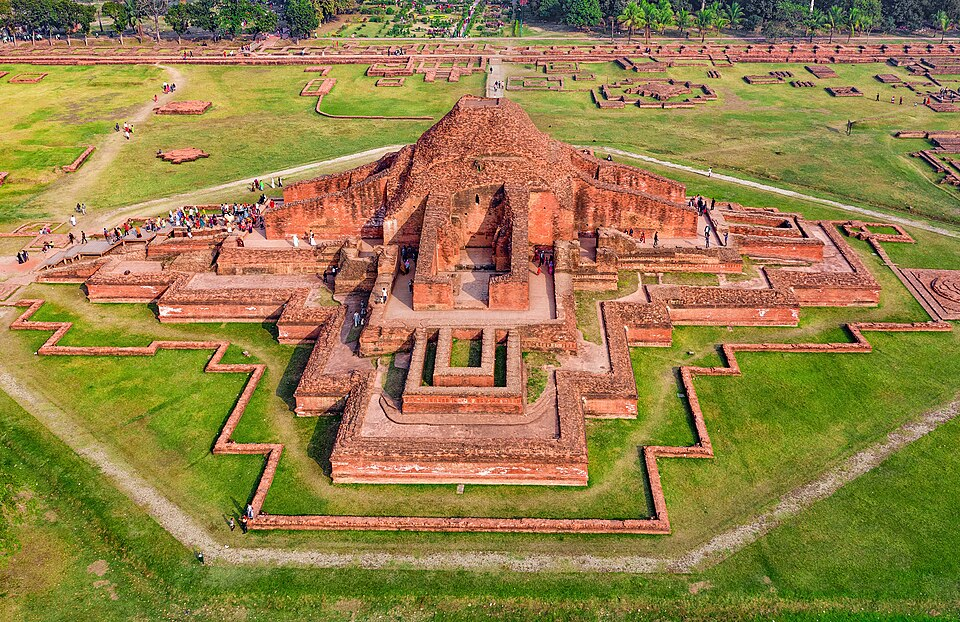

Region · Archaeology & heritage
North Bengal
Bangladesh's archaeology belt — a flat, fertile corridor where the Pala dynasty built the largest Buddhist monastery in South Asia and left terracotta temples across the countryside.

North Bengal is for travellers who want to get off the well-worn trail. The crowds are thin, the distances are manageable by local bus and CNG, and the archaeology is world-class — yet this corner of Bangladesh sees a fraction of the visitors it deserves. Bogura makes the best base for Paharpur and Mahasthangarh; Rajshahi for the Puthia temples and the Varendra museum.
The main draws
- Somapura Mahavihara, Paharpur. The largest Buddhist monastery in South Asia, built under the Pala king Dharmapala in the 8th century. A UNESCO World Heritage Site of extraordinary scale — 177 monks' cells surround a towering central stupa rising from flat green plains.
- Mahasthangarh. Bangladesh's oldest known urban site, inhabited continuously from at least the 3rd century BC. Massive earth ramparts above the Karatoa River, a small museum, and almost no other visitors.
- Puthia temple complex. Bangladesh's largest grouping of Hindu temples on a single campus — carved terracotta towers from the 17th–19th century arranged around a sacred tank. It reads like a smaller, quieter Khajuraho.
- Varendra Research Museum, Rajshahi. Bangladesh's oldest museum, 1910. Pala-era stone sculpture, Sanskrit inscriptions and Buddhist bronzes.
How long to plan
Two full days covers the main sites: one day for Paharpur and Mahasthangarh (both north of Bogura), one day for the Rajshahi cluster. Add a third if you want to explore Bogura bazaar, find the silk weavers of Rajshahi, or travel slowly by local bus between sites.
Getting there
Express trains from Dhaka's Kamalapur to Rajshahi run daily (roughly 5–6 hours). Buses from Dhaka to Bogura take 5–7 hours. Both cities have frequent local transport onwards to the sites. See how it fits with your wider itinerary in the trip planner.
Combine well with Dhaka. North Bengal pairs naturally with Dhaka as a 3–4 day circuit. Some travellers also loop in the Comilla–Mainamati Buddhist ruins on the return east.